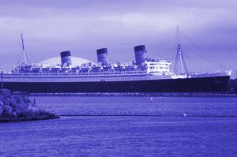
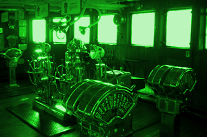
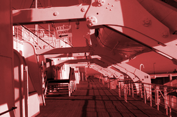
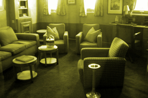

Construction on the Queen Mary began in December of 1930, but work was stopped in 1931 due to the Great Depression. Work on the ship remained at a standstill for nearly 4 years, but a government subside allowed work to resume on the ship. The hull of the ship was completed in September of 1934 and for the next two years, work resumed on the interior rooms. The Queen Mary made her maiden voyage on May 27, 1936 and was said to be the "stateliest ship afloat" by King George V. The Queen Mary arrived in New York in four and a half days.
During World War II, the Queen Mary continued to sail the Atlantic. Often she would have to dodge submarines while carrying passengers and refugees. The Queen Mary became more of a troop transport vessel and for the next six years transported troops across the Atlantic. After the war, she returned to carrying travel passengers until the 1960s. When the cruise ship industry began to drop off she was eventually retired. Today she is a tourist attraction and hotel in the Longbeach, California.



